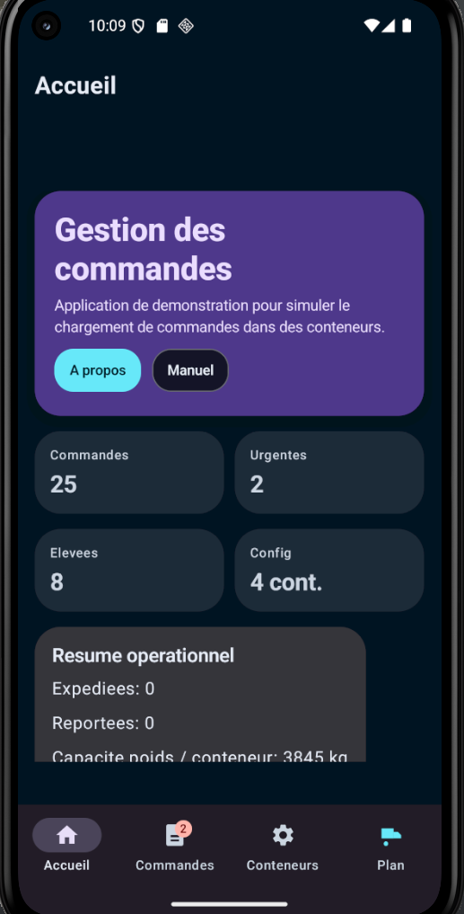
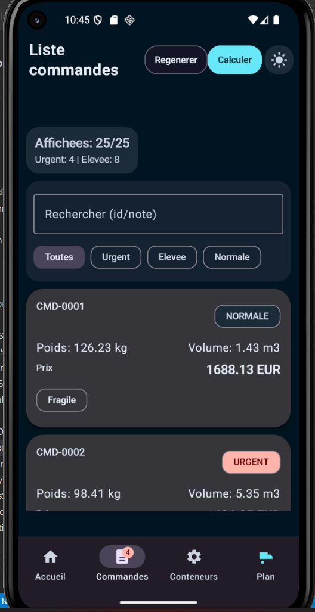
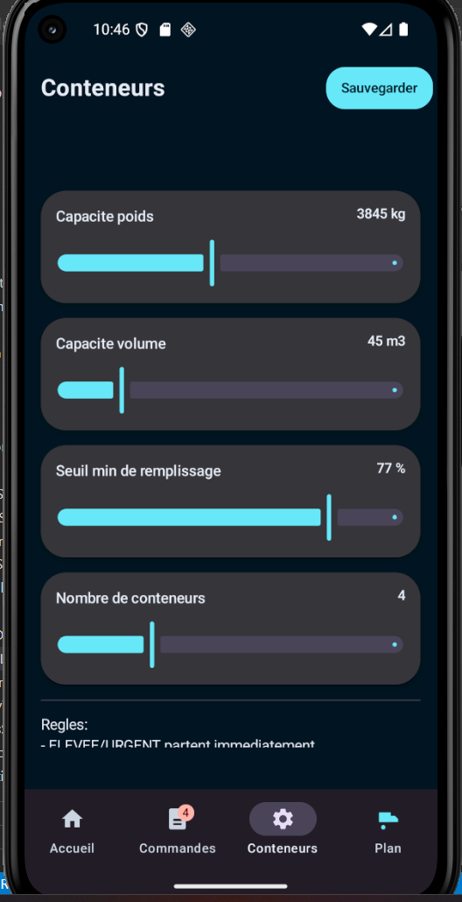
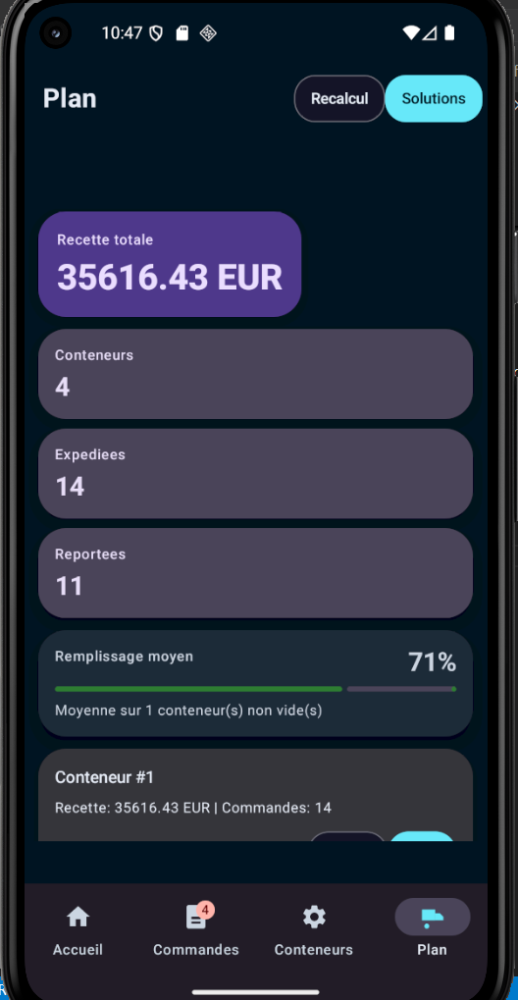

Manuel d'utilisation
Application Android de gestion de commandes et d'optimisation du remplissage de conteneurs.
1. Presentation generale
Gestion_des_commandes est une application Android de demonstration qui permet de charger des commandes dans des conteneurs d'expedition tout en respectant des contraintes de poids, de volume et de priorite.
L'application permet de consulter des commandes, configurer des conteneurs, calculer un plan d'expedition, comparer plusieurs solutions, presenter des resultats de projet et consulter le detail des conteneurs.
2. Captures d'ecran du parcours utilisateur
2.1 Accueil

- Vue globale du projet.
- Resume operationnel du dernier plan calcule.
- Acces rapide aux pages Resultats, A propos et Manuel.
2.2 Commandes

- Afficher toutes les commandes generees.
- Rechercher par identifiant ou note.
- Filtrer par priorite.
- Relancer une generation de commandes.
- Declencher le calcul du plan.
2.3 Configuration

- Definir la capacite poids maximale.
- Definir la capacite volume maximale.
- Definir le seuil minimal de remplissage.
- Definir le nombre de conteneurs.
2.4 Plan

- Afficher la recette totale, le remplissage moyen et les KPI.
- Comparer plusieurs solutions de chargement.
- Appliquer une solution proposee.
- Consulter chaque conteneur.
2.5 Resultats du projet

3. Parcours d'utilisation recommande
- Ouvrir l'ecran Accueil.
- Verifier le contexte general puis ouvrir Commandes.
- Verifier ou regenerer la liste.
- Ouvrir Conteneurs et regler les capacites.
- Enregistrer avec Sauvegarder.
- Calculer le plan de chargement.
- Comparer les solutions puis appliquer celle qui convient le mieux.
- Ouvrir un conteneur pour consulter son detail.
- Terminer par Resultats du projet pour la synthese.
4. Description de l'algorithme de remplissage
Objectif
Maximiser la recette expediee en respectant les contraintes de poids, de volume et de priorite.
Entrees
Liste des commandes, configuration des conteneurs et parametres heuristiques.
4.1 Phase 1 : creation des conteneurs
L'application cree autant de conteneurs que la configuration le demande. Chaque conteneur a une capacite de poids et de volume.
4.2 Phase 2 : priorisation des commandes
Les commandes prioritaires (URGENT et ELEVEE) sont traitees avant les commandes normales.
4.3 Phase 3 : placement glouton
Chaque commande recoit un score base sur son prix, son poids, son volume et sa priorite. Les commandes les plus interessantes sont placees en premier dans le conteneur le plus adapte.
4.4 Phase 4 : optimisation locale
Une phase supplementaire teste des ajustements entre conteneurs pour ameliorer le resultat :
- Move : deplacer une commande normale vers un autre conteneur.
- Swap : echanger deux commandes normales entre deux conteneurs.
Une modification est conservee uniquement si elle ameliore le score global.
4.5 Phase 5 : application du seuil minimal
Un conteneur sous le seuil minimal est reporte s'il ne contient aucune commande prioritaire. A l'inverse, un conteneur avec priorite peut partir meme s'il est peu rempli.
4.6 Resultat final
Le plan final contient la liste des conteneurs expedies, les commandes expediees, les commandes reportees et la recette totale.
5. Solutions proposees
L'application calcule plusieurs variantes heuristiques :
- Equilibre
- Poids prioritaire
- Volume prioritaire
- Prix agressif
Chaque solution peut etre comparee selon la recette, le remplissage moyen et le nombre de reports.
6. Sauvegarde locale
Le theme clair/sombre et la configuration des conteneurs sont sauvegardes localement avec DataStore.
7. Conseils pour la soutenance
Ordre recommande : Accueil, Commandes, Config, Plan, Resultats du projet.
Les visuels du dossier docs/screenshots peuvent etre remplaces par de vraies captures exportees depuis l'emulateur.
8. Limites actuelles
- Les commandes sont actuellement generees automatiquement.
- Le moteur de remplissage est heuristique, pas un solveur mathematique exact.
- Les commandes ne sont pas encore gerees via une base de donnees metier complete.
9. Conclusion
L'application fournit une base claire et lisible pour simuler des plans d'expedition, comparer plusieurs solutions de chargement et expliquer les decisions prises par l'algorithme.